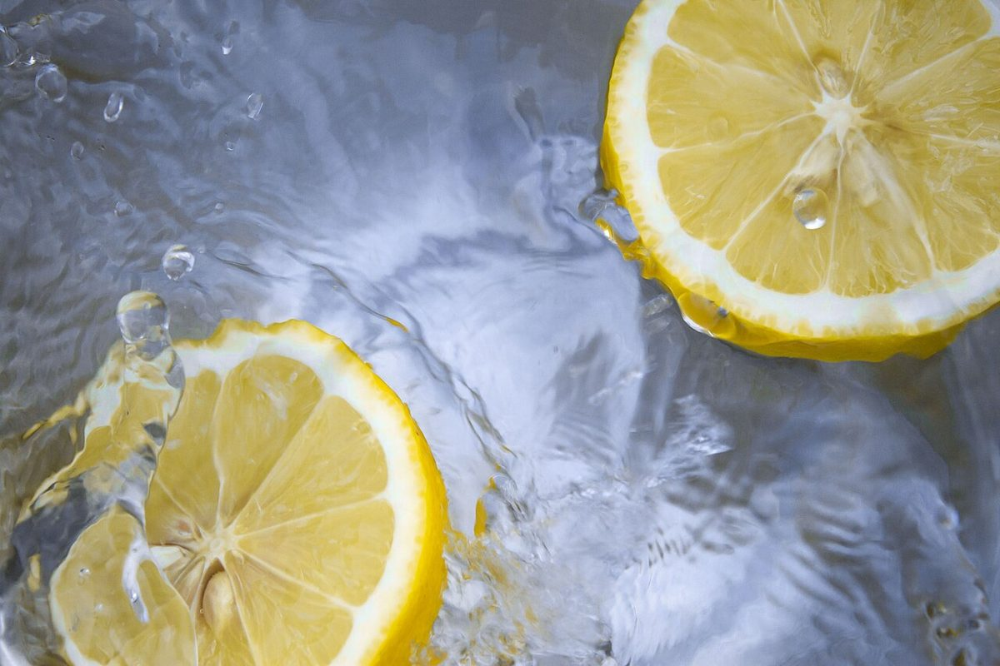
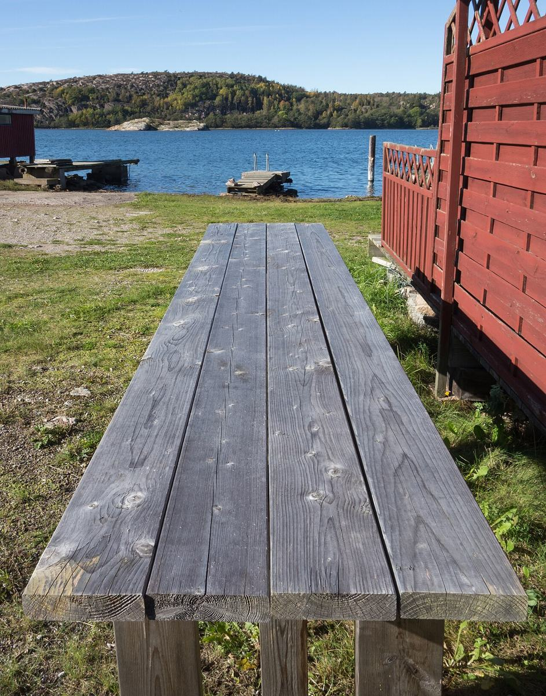

店のこと
ドーナツメーカーの部位の配置図
お店の詳しい情報は準備中です。ここでは、制作側が考えたデザインの考え方を紹介します。


制作側の連想
番号は、部位の番号
ホームの図にある1〜6の番号は、それぞれドーナツメーカーの部位の名前に対応します。ドーナツメーカーの部位を図にしたもので、制作側の連想です。お店の理念・由来とは無関係で、実際の製品の仕様を示すものでもありません。
1上蓋
本体の上から閉じる板で、下の型と向かい合って生地をはさむ側。
2蝶番
上蓋と本体をつなぐ軸の部分で、蓋が開け閉めされるときの支点。
3型の凹み
丸いリング状の溝が並ぶ部分で、生地を流し込んで形をつくるところ。
4中央の芯
凹みの真ん中にある小さな突起で、ドーナツの穴をつくる部分。
5表示ランプ
電源が入っているかどうかなどを、光で知らせる小さな灯り。
6取っ手
本体の手前にある持ち手で、蓋を開け閉めするときにつまむところ。
写真(イメージ)
写真(イメージ)



写真はイメージです。お店のものではありません。
確認できていること
お店の情報
| 屋号 | Street Smart Coffee |
|---|---|
| 所在地 | 〒034-0017 青森県十和田市東二番町７−２０ |
| SNS | Instagram @street_smart_coffee |
| そのほか | 準備中 |